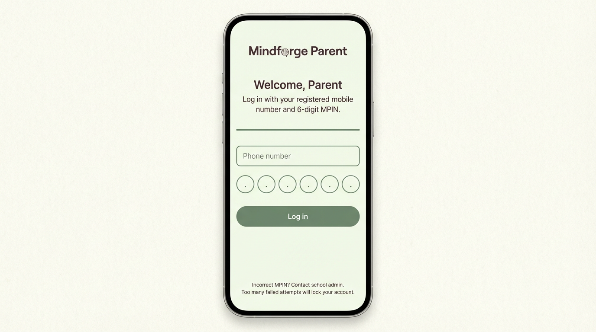
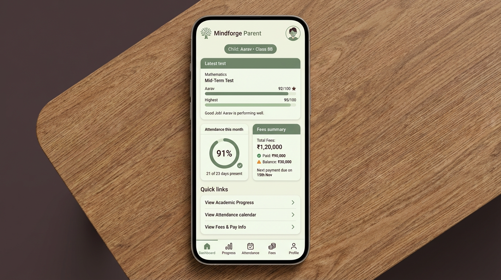
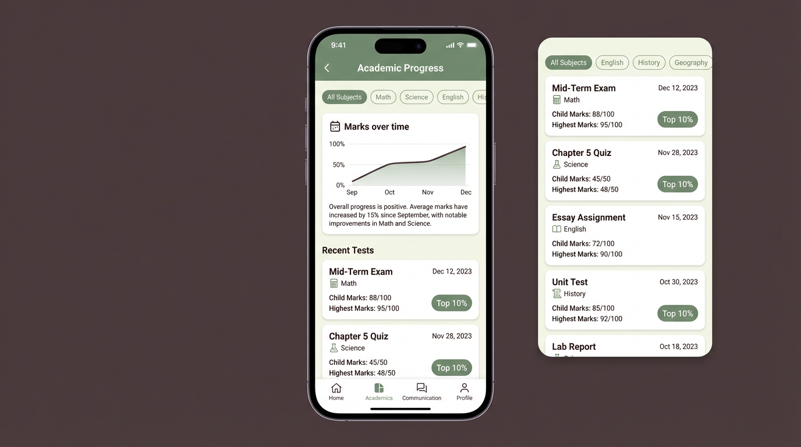
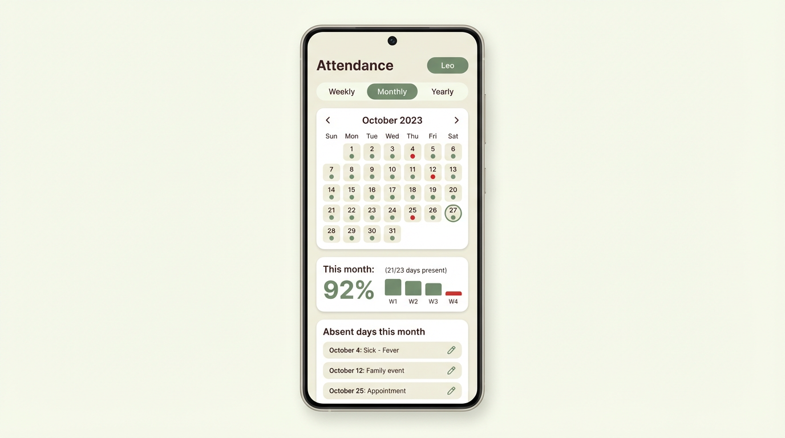
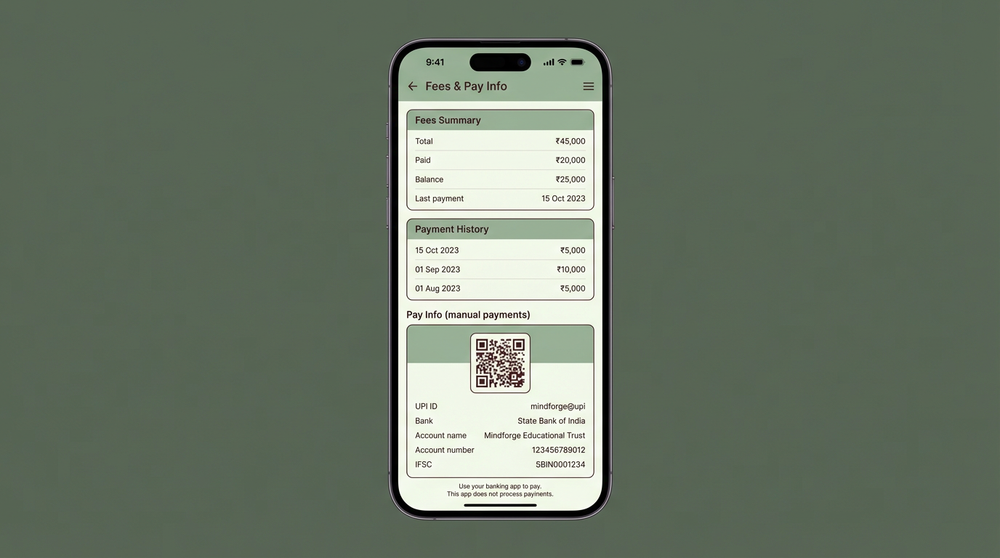

UX Design Spec
Mindforge Parent App — UX (Mobile-first)
1. UX System Overview
Mobile-first, read-only parent experience for a single linked child, aligned with Student/Teacher apps.
UX Principles
- Read-only, trust-building – parents can see everything, change nothing accidentally.
- Mobile-first – all flows optimised for phone use; desktop can follow.
- One-child focus – every screen clearly scoped to the linked child.
- Calm and informative – simple cards, charts, and explanations.
- Consistent branding – sage green, cream, deep brown palette.
2. Key User Flows (Mobile)
2.1 Login (Mobile + MPIN)
Goal: Parent logs in with phone number + 6-digit MPIN.
Flow:
1. Enter registered mobile number.
2. Enter MPIN using 6 circular inputs + numeric keypad.
3. On success, navigate to Home (Dashboard) with child context.
Errors:
- Incorrect MPIN message.
- Lockout message after repeated failures.4. Screen Reference (Mobile)
4.1 Login
Phone number + 6-digit MPIN, admin-created accounts only.
- Fields: phone number, MPIN (6 circles).
- Primary button: Log in (sage green).
- Helper text: contact school admin for issues; lockout hint.
Login — Mobile

Image: images/parent-login-mobile.png
4.2 Dashboard (Home)
Single scrollable view of latest test, attendance %, and fee status.
- Child context pill (name, class, section).
- Cards:
- Latest test: subject, name, child vs highest marks, short feedback.
- Attendance this month: big % + “X of Y days present”.
- Fees summary: total, paid, balance.
- Quick links: Academic Progress, Attendance calendar, Fees & Pay Info.
Dashboard — Mobile

Image: images/parent-mobile-dashboard.png
4.3 Academic Progress
Subject-filtered view of tests, marks, and trends.
- Subject filter chips (All / Math / Science / …).
- Mini line chart “Marks over time” + short text summary.
- Recent tests list rows:
- Test name, subject, date.
- Child marks vs highest marks.
- Optional “Top 10%” badge.
Academic Progress — Mobile

Image: images/parent-mobile-progress.png
4.4 Attendance
Weekly, monthly, and yearly attendance with clear absent dates.
- Segmented control: Weekly / Monthly / Yearly.
- Month calendar with colored dots (green present, red absent).
- Summary: percentage + days present/total.
- List of absent days with dates and reasons.
Attendance — Mobile

Image: images/parent-mobile-attendance.png
4.5 Fees & Pay Info
Fee status plus static instructions for manual payments.
- Fees summary card: total, paid, balance, last payment.
- Optional short payment history list.
- Pay Info card: QR, UPI ID, bank + account details, IFSC.
- Explicit message that payments occur outside the app.
Fees & Pay Info — Mobile

Image: images/parent-mobile-fees.png
STANDARD HANDOFF
============================================
HANDOFF: UX/UI Designer Agent → Planner Agent → Developer Agent
============================================
PROJECT: Mindforge Parent App
MOBILE SCREENS:
- parent-login-mobile.png
- parent-mobile-dashboard.png
- parent-mobile-progress.png
- parent-mobile-attendance.png
- parent-mobile-fees.png
SCOPE:
- Login with mobile + MPIN
- Dashboard (Home)
- Academic Progress
- Attendance
- Fees & Pay Info
CONSTRAINTS:
- Read-only across academic, attendance, and fees domains
- One-child scope from linkedStudentId
- No in-app payment initiation
NEXT STEPS:
- Planner Agent: break this UX into epics and stories for apps/parent/frontend
- Developer Agent: implement mobile-first React/Vite screens matching these contracts
============================================